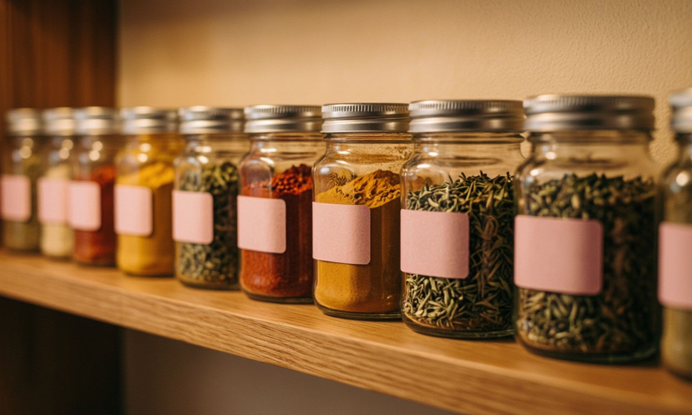

Специи не портятся как молоко, но они теряют аромат и вкус. Просроченная приправа не навредит здоровью, но испортит блюдо. Вот таблица оптимальных сроков хранения при соблюдении условий (сухое, тёмное место, герметичная тара).
| Специя | Срок хранения | Признак потери качества |
|---|---|---|
| Молотые специи (перец, паприка) | 6–12 месяцев | Выцветание, слабый запах |
| Цельные специи (горошек, палочки) | 2–3 года | Потеря эфирных масел |
| Сушёные травы (базилик, орегано) | 1–2 года | Превращение в пыль, отсутствие аромата |
| Соль | Бессрочно | Слёживание при влажности |
| Сахар | Бессрочно | Комкование |
Закажи готовые рационы с идеально подобранными приправами от шеф-поваров.
Заказать еду JustFood → Реклама. Рекламодатель ООО "ДЖАСТ ФУД", ИНН 7719465858. Сайт https://www.justfood.pro